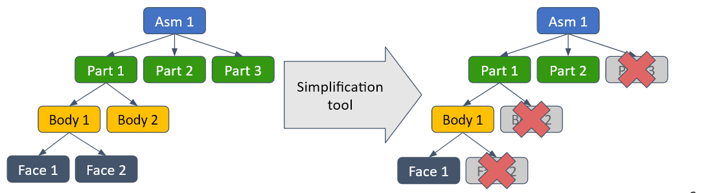
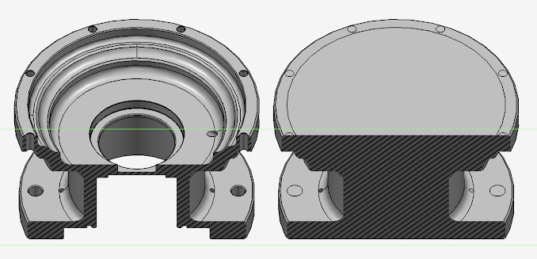
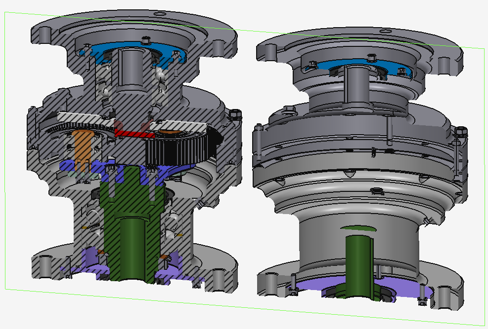

B-Rep simplification is a feature of Advanced Geometry Processing add-on that transforms B-Rep and mixed (B-Rep and polygonal) models so that their general visual appearance is maintained but geometry is simplified, i.e. contains fewer faces and triangles.
The component is implemented as a collection of simplification algorithms working on different features that can be composed in a pipeline for convenient application to models.
The features affected by simplification include:
These algorithms act as functions mapping one ModelData_Model instance to another, skipping or modifying certain faces, bodies and parts to get the final result. The original model is not modified in this process:

|
| The effect of simplification tool that removes elements on the model structure. |
ModelSimplifier_Simplifier class is the main way to perform B-Rep simplification. Its Peform method accepts an instance of ModelData_Model, runs the algorithms on it and returns a different ModelData_Model instance. The instance of ModelSimplifier_Simplifier acts as a container for simplification algorithms, running them one after another in the specified order.
Concrete simplification algorithms are represented by the classes derived from ModelSimplifier_SimplifierTool. Each of them targets one of the features listed in the previous section. By convention, these classes all have Tool suffix in the class name.
There are 2 ways to use the API:
Below is an example of how ModelSimplifier_Simplifier might be used via the first approach:
B-Rep simplification component also provides an ability to apply the algorithms conditionally through the ModelSimplifier_ShapePredicate interface. To use it one should create a derived class and implement 2 predicates accepting ModelData_Shape and returning a boolean value. One predicate determines whether the simplification will be applied to the shape at all. Another determines whether simplification is allowed to break the shape up into pieces. Shapes passed to this predicate are normally bodies, and the predicate can in principle use any reasonable parameter of these shapes to make a decision, including outside information, such as user-defined parameters of the shape. Once created the predicate can be passed to the ModelSimplifier_SimplifierBuilder or to individual tools if the pipeline is assembled manually.
Below is an example of how the shape predicate might use user-defined properties to forbid B-Rep simplifier to work on specific shapes:
In this section we'll briefly cover the simplification tools and their parameters
Simplification tool that removes blind and through holes. It searches and identifies geometric configurations that represent such holes and then attempts to remove them from the model.

|
| Left: section of solid model with multiple through holes. Right: section of said model passed through Hole remover. |
The ExtentThreshold, VolumeThreshold and DiagonalThreshold define the different thresholds used to judge whether the geometry detected as internal part of the hole is truly that. The algorithm that produces candidates for hole internals also finds the faces of boss-like features, so these thresholds are used to classify the candidates into holes and bosses and thus only process real holes. Another parameter - PerformInterferenceCheck, specifies whether the faces in the resulting model, that occupy the place where the hole entrances originally were, should be checked for intersections with the rest of the model. Disabling this setting may lead to questionable-looking model, but yields better simplification ratio.
Simplification tool that removes the portions of the model not visible from most angles from outside. It checks faces from multiple viewing angles and viewpoints and if they can't be seen from anywhere, deletes them. Face-oriented approach allows to simplify the model the most, however, the model quality deteriorates - solid bodies turn into unclosed sheet bodies. Hence, the tool can also be configured to only delete whole bodies.

|
| Left: section of solid assembly with lots of internal details. Right: section of said assembly passed through Internal faces remover. |
The visibility checks in the tool are parameterized by linear tolerance and angular tolerance. The larger these tolerances are, the larger the holes (through which internal details are visible) are ignored when considering the visibility of internal faces. By default the linear tolerance is relative to the size of the model's bounding box. When IsLinearToleranceRelative is set to false, linear tolerance value is interpreted as absolute value in millimeters.
The PreserveSharing parameter specifies what to do in a situation where a face in a part instanced in 2 locations in the model is visible in one location but not the other. When the parameter is enabled, only those faces not visible in every instance of their part are deleted. When it's disabled, all faces are deleted, but owning part sharing is broken (i.e. another part is created and leftover geometry is duplicated).
Simplification tool that removes bodies that are small compared to the entirety of the model. It measures sizes of bodies and removes those that don't exceed the treshold. Alternatively, it can operate in a bit more sophisticated mode that also considers the role of the body within the model. If the body is deemed to play a significant role in the model, it is not removed even when going under the threshold.
The mode of operation is controlled by RemovalIsVisualQualityAware parameter. It is on by default to prevent changes that would severely compromise the appearance of the model. The severity of visual appearance change is judged according to the VisualQualityThreshold parameter. The original candidates for removal are selected according to the Threshold parameter.
ModelSimplifier_MeshSimplifierTool is just an adaptation of ModelSimplifier_MeshSimplifier to the ModelSimplifier_SimplifierTool interface. See here for detailed description of mesh simplification.
Internal faces remover and small bodies remover are general enough to be working without significant mistakes on the majority of the models. Hole remover though currently only works with holes whose entrances are bounded by inner wires (i.e. holes whose entrances are incident to more than 1 face are not supported).
When configuring the tools manually certain parameter configurations may lead to huge computational effort required to execute the algorithm so that it appears to hang. In such cases the parameters may need to be relaxed to allow the algorithms to finish in reasonable time.